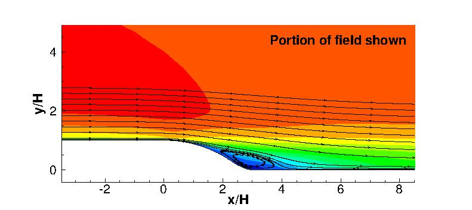

|
Public Access (formerly Langley Research Center)Turbulence Modeling Resource |
LES: 2-D Curved Backward-Facing Step
Return to: Data from LES - Intro Page
Return to: Turbulence Modeling Resource Home PageThe data on this page were provided by S. Lardeau of CD-ADAPCO.
This LES case is for 2-D separating flow over a curved ramp.
The LES was run using an incompressible code, and has been documented in the following publications:
Note that there is a typo in both references in the equation for the curved ramp geometry. The corrected
curved backstep geometry definition is given below.
This LES simulation was produced in a joint research program between the University of
Manchester and Imperial College, with Manchester producing the experimental data, as described on
the Exp:
Round Synthetic Jets for Separation Control on 2-D Curved Backward-Facing Step
page, and Imperial College undertaking the LES simulations described here.

Some relevant information is given here, but the
interested reader is referred to the above publications for complete details:
Long-time averaged LES data are provided below (on a grid
normalized to backstep height H=1).
These results are from a grid with approximately 23.6 million grid cells, covering a spanwise extent of 3.17 H with 192 cells in the
spanwise direction.
Additional details about the LES grid and methodology can be found in the above
references.
Auxiliary postprocessed information:
Return to: Data from LES - Intro Page
Recent significant updates:
06/10/2020 - added link to corresponding experimental data
10/16/2015 - corrected geometry definition
Page Curators: Christopher Rumsey,
Ethan Vogel,
Clark Pederson
Last Updated: 11/05/2021